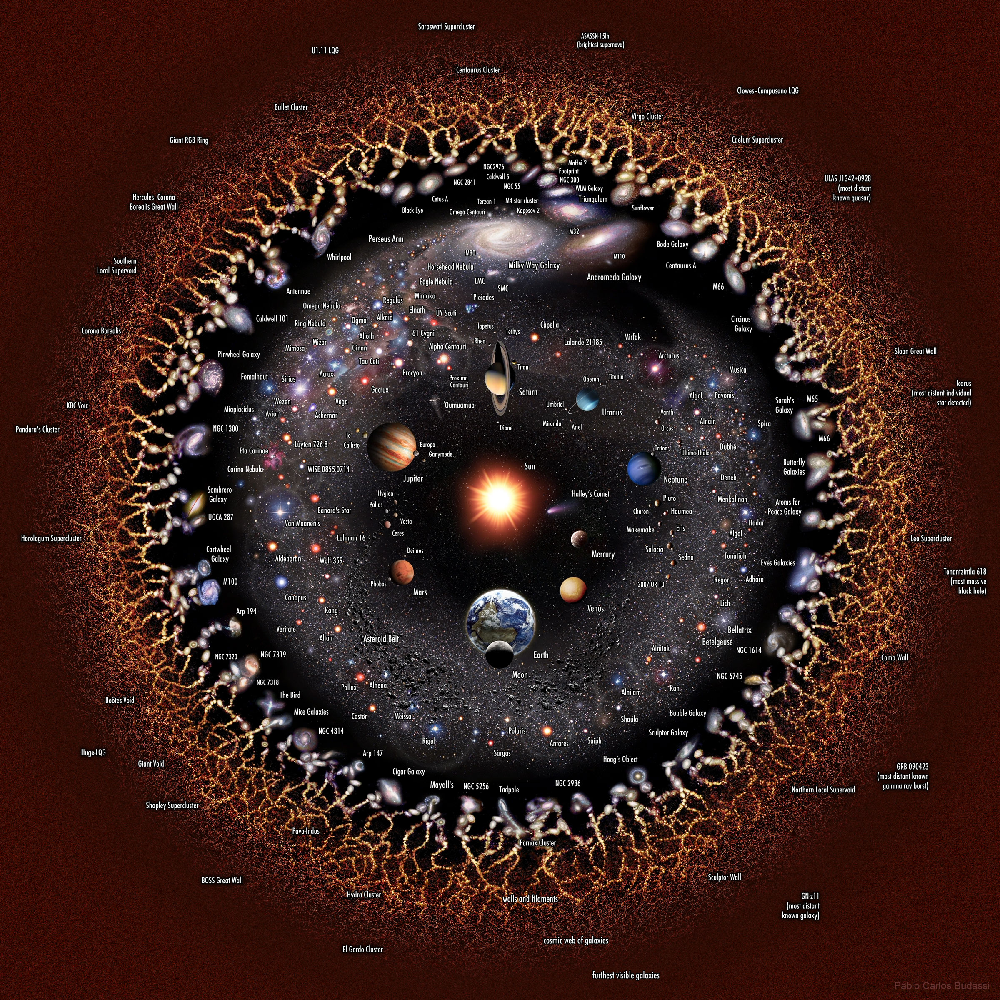

In 1977, a radio telescope detected a strong, unexplained 72-second signal from deep space.It was so unusual that the astronomer circlid it a wrote "Wow!" on the printiut, and its origin remains unknown to this day.

Something massive in deep space is pulling our Milky Way and thousand of other galaxies toward it at millions of miles per hour. Scientists cannot see it directly because it lies behind the dense center of our galaxy.

Intense millisecond-long bursts of cosmic radio waves flash across the universe ramdomly.While some repeat regularly, their exact cause whether neutron star collisions or alien technology remains unexplained.
